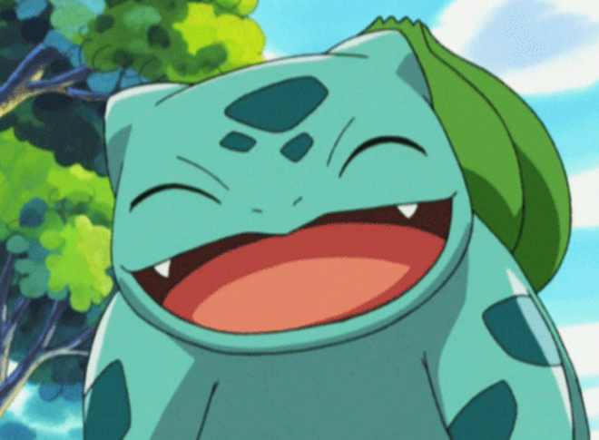

Disponível

Bulbasaur
- Idade: Jovem (2 anos)
- Temperamento: Calmo e afetuoso
- Local de Resgate: Floresta de Viridian
Muito dócil e adora tomar sol no jardim. Ideal para treinadores iniciantes ou famílias com crianças.